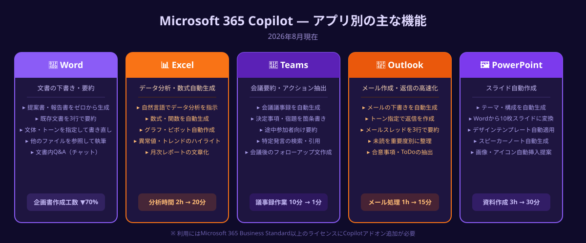
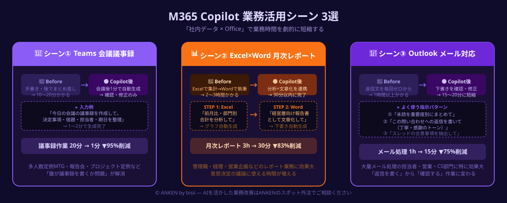

Microsoft 365 Copilotの使い方と活用法｜Word・Excel・Teams・Outlookで業務を自動化する全機能ガイド【2026年版】
Microsoft 365 Copilotでできることを一言で表すなら「社内のファイル・メール・会議録という"自分だけの情報"をAIが参照し、Word・Excel・Teams・Outlookの操作をその場で自動化してくれる」ことだ。ChatGPTやClaudeと最大の違いは「すでに使っているMicrosoftアプリの中で完結する」点で、新しいツールへの移行コストがゼロ。本記事では、M365 CopilotをOfficeアプリ別の使い方・設定・業務活用シーン3選に分けて、2026年最新情報をもとに解説する。
本記事は2026年8月時点の情報に基づいています。
AIツール導入・社内展開をスポット外注で相談する
Copilotの展開計画・社内研修・業務自動化システムの構築をAIエンジニアにスポット依頼できます。初回相談・見積もりは無料。しつこい営業は一切ありません。
無料で相談する →Microsoft 365 Copilotとは｜他のAIと何が違うか
Microsoft 365 Copilotとは：Word・Excel・Teams・Outlook・PowerPointなどMicrosoftのビジネスアプリに統合されたAIアシスタント。GPT-4oベースの言語モデルと、各社が契約するMicrosoft 365テナント内のデータ（メール・ドキュメント・会議録）を組み合わせて、個別の業務に特化した回答・生成・要約を提供する。
ChatGPTとの最大の違いは「自社データを事前登録なしに参照できる」点だ。ChatGPTに「先月の営業会議のまとめを作って」と依頼してもChatGPTは何も知らない。一方M365 CopilotはTeams会議録・会議チャット・添付資料を自動的に参照して要約を生成できる。自社データを"外に出さず"に活用できるため、セキュリティポリシーが厳しい企業でも広く採用が進んでいる。

2026年現在のM365 Copilotはさらに「Copilot Studio」でカスタムエージェントを構築できるようになり、単なる「AIアシスタント」から「業務プロセス自体を自律実行するエージェント」へと進化している。中小企業が導入するうえで注目すべき点は「既存のMicrosoft 365ライセンスにアドオンするだけで使える」ことで、新しいシステム開発や大規模なDXプロジェクトがなくても導入できる敷居の低さにある。
他のAIツールとの比較（早見表）
M365 Copilot：社内データ（メール・ドキュメント・会議録）参照 → 社内業務に特化・ハルシネーション少。
Gemini for Google Workspace：Google Workspace（Gmail・Docs・Sheets）内で同様に機能 → G Suite使いはこちら。
ChatGPT：インターネット全体の知識 → 汎用質問・コーディング・外部調査が得意。
NotebookLM：指定したファイルだけを参照 → 特定資料を深掘りするQ&Aに特化。
アプリ別の使い方（Word・Excel・Teams・Outlook・PowerPoint）
① Word Copilot｜文書の下書きと要約
Wordを開いてCopilotサイドパネルを起動すると、「この文書を3行で要約して」「第2章をビジネス文書として書き直して」「競合比較表を追加して」という指示をチャット形式で入力できる。白紙の文書に対して「〇〇についての提案書を作成して（社内資料Aを参照）」と入力すると、指定したファイルを参照してゼロから下書きを生成することも可能だ。下書き後は通常のWord編集で仕上げを行う。
② Excel Copilot｜データ分析と数式の自動生成
Excelの「Copilot」ボタンをクリックすると、スプレッドシートのデータに対して自然言語で指示できる。「月別売上の前月比を追加する列を作成して」「外れ値のあるデータをハイライトして」「このデータの主なトレンドを3点教えて」などの指示に対して、数式の自動生成・書式設定・グラフ作成を行ってくれる。Excelの関数に不慣れな非エンジニアでも数式を自力で書かずにデータ分析ができる点が特徴だ。テーブル形式に変換されたデータにのみ機能するため、最初にテーブル設定を行っておくことが前提となる。
③ Teams Copilot｜会議要約とアクション抽出
TeamsのCopilotは「会議中のリアルタイム字幕」と「会議後の自動要約」の2つのフェーズで機能する。会議後に「今日の会議で決まったことを教えて」「Aさんの発言から宿題事項を抽出して」と入力すると、会議録から関連箇所を自動検索して回答する。会議に途中参加・欠席した場合でも「参加前の議論の要点」をCopilotに問いかけてキャッチアップできる。利用にはTeams会議の「文字起こし」機能をオンにしておく必要がある。
④ Outlook Copilot｜メール作成と返信の下書き
Outlookのメール作成画面でCopilotアイコンをクリックすると「メールの下書き」機能が起動する。「先日の提案書送付について1週間後のフォローアップメールを書いて。丁寧かつ簡潔に」という指示を入力するだけでメール本文が生成される。受信メールに対しては「このメールスレッドの要約」「返信の下書き（前向きなトーンで）」が使える。長いメールチェーンを遡る時間の削減に特に効果が高い。
⑤ PowerPoint Copilot｜スライド自動作成
PowerPointで「プレゼンテーションを作成して」とCopilotに指示すると、テーマ・スライド数・構成案を自動生成してくれる。「Wordで作成した提案書をもとに10枚のスライドに変換して」という指示も可能で、既存ドキュメントからプレゼン資料への変換が数分で完了する。デザインテンプレートの適用も「もっとプロフェッショナルなデザインに変更して」と指示するだけで自動変換される。
始め方｜ライセンスと初期設定
M365 Copilotを使い始めるために必要なステップは3つだ。
STEP 1：対象ライセンスの確認
Microsoft 365 Copilotは「Microsoft 365 Business Standard」「Microsoft 365 E3」「Microsoft 365 E5」のいずれかのプランを持つユーザーに、Copilotアドオンライセンス（月額約3,750円/ユーザー・税別）を追加する形で使える。Business Basicプランはアドオン対象外のため注意が必要だ。2026年現在、中小企業向けには20席以下でも対応するプランが提供されている。
STEP 2：管理者によるライセンス割り当て
Microsoft 365管理センター（admin.microsoft.com）にサインインし、「ライセンス」→「アクティブなユーザー」からCopilotライセンスを付与したいユーザーを選択して割り当てる。割り当て後、各ユーザーがWordやOutlookを開くとCopilotのサイドパネル・ボタンが表示されるようになる。
STEP 3：Copilotを起動して使い始める
Word・Excel・PowerPoint：リボンの「Copilot」ボタンまたはサイドパネルから起動。Teams：会議画面右上のCopilotアイコンから起動（文字起こしオン設定が必要）。Outlook：メール作成ウィンドウ内の「Copilot」ドロップダウンから起動。初回利用時はサインイン確認と利用規約への同意が求められる。
業務で使える活用シーン3選

活用シーン①：会議後の議事録・アクションアイテム自動作成（Teamsで10分→1分）
Teams会議終了後にCopilotに「今日の会議の議事録を作成して。決定事項・宿題・担当者・期日を整理して」と入力すると、1〜2分で会議録テキストが生成される。担当者名と期日をTeams Plannerに自動追加するワークフローと組み合わせると、会議後の事務作業がほぼゼロになる。定例MTGや多人数会議で特に効果が高く、「議事録を誰が書くか」という問題自体がなくなる。
活用シーン②：週次・月次レポートの半自動作成（Excel＋Word連携）
ExcelのCopilotで「先月の売上データの前月比・前年比・部門別合計を分析して」と指示しグラフ・数値をまとめさせ、そのデータをWordのCopilotに貼り付けて「経営層向けの月次報告書として文章化して」と指示する。この2ステップで、手作業なら2〜3時間かかる月次レポート作成が30分以内に完了する。管理職の「レポートを書く時間」を削減し、意思決定の議論に集中する時間を増やせる。
活用シーン③：メール対応の高速化（Outlookで1時間→15分）
1日に大量のメールを処理する担当者にとって、OutlookのCopilotは特に効果が大きい。「未読メールを重要度別にまとめて」「この問い合わせへの返信を書いて（丁寧・簡潔・感謝のトーンで）」「このメールスレッドの合意事項を抽出して」という指示を使い分けることで、メール処理時間を大幅に短縮できる。受信トレイの整理・返信下書き・要点抽出をCopilotが補助することで、1時間かかっていたメール処理が15〜20分で終わるケースが報告されている。
注意点と使いこなしのコツ
①生成された内容は必ず確認してから使う
Copilotは高精度だが誤りが含まれることがある。特に数値・固有名詞・日付のあるコンテンツは、原文（メール・ファイル）で確認してから確定する。会議要約で「A社への返答は〇日まで」という記載を確認せずに転記すると、誤った期日をチームに共有するリスクがある。
②プロンプトは「役割＋目的＋出力形式」を指定すると精度が上がる
「要約して」より「経営会議の参加者向けに、決定事項と宿題を箇条書き3点でまとめて」のほうが精度の高い出力が得られる。Copilot専用の「プロンプトのコツ」をチームで共有することが、組織全体での活用精度を高める最短ルートだ。
③アクセス権限の設計を先に行う
Copilotはユーザーがアクセス権を持つファイル・メールのみを参照できるが、「全員がアクセスできてしまっているファイル」がある場合、意図せずCopilot経由で情報が可視化されるリスクがある。導入前にSharePointとOneDriveのアクセス権限を棚卸しし、機密ファイルへの権限を適切に絞ることを推奨する。
Copilot展開・社内AI研修をスポット外注で依頼する（無料相談）
ANKENでは、M365 Copilotの導入設計・権限棚卸し支援・社内プロンプト研修をスポットで依頼できるAIエンジニアをご紹介しています。「どのアプリから始めれば効果が出やすいか」の相談から対応します。
無料で相談する →よくある質問
- Q. Microsoft 365 Copilotは月いくらかかりますか？
- A. 2026年現在、アドオンライセンスはユーザー1名あたり月額約3,750円（税別）です。既存のMicrosoft 365サブスクリプション（Business StandardまたはE3/E5）に追加する形で購入します。
- Q. 社内のデータがMicrosoftのAI学習に使われますか？
- A. Microsoftは法人契約において「顧客データはAIモデルのトレーニングに使用しない」と明言しています。法人でM365のテナント管理下で使用することが前提です。個人アカウントでの利用は利用規約を必ず確認してください。
- Q. CopilotとChatGPTはどう使い分ければよいですか？
- A. Copilotは「社内のメール・ドキュメント・会議録を活用する」用途に特化しています。ChatGPTは外部情報の調査・汎用的な文章生成・コーディングに向いています。日常の社内業務はCopilot、外部リサーチや創作はChatGPTという使い分けが効率的です。
まとめ
Microsoft 365 Copilotは「すでに使っているOfficeアプリのまま、AIが社内データを参照して業務を自動化してくれる」という設計が最大の強みだ。新しいSaaSを覚え直すコストなく、Word・Excel・Teams・Outlookの操作の中でAIのサポートを受けられる。
まず始める3ステップをおさらいする。STEP 1：Business Standard以上のM365ライセンスにCopilotアドオンを追加する。STEP 2：SharePoint・OneDriveのアクセス権限を棚卸しし、機密ファイルの権限を適切に設定する。STEP 3：Teams会議要約・Outlookメール下書き・Excelデータ分析の3機能からどれか1つ試して、効果を体感してから社内展開を判断する。
Copilot導入の次のステップとして「Copilot Studioでカスタムエージェントを構築する」「他のAIツール（ChatGPT・NotebookLM）との使い分けルールを社内で定める」ことを検討すると、AI活用が組織全体の生産性改善に直結するようになる。
M365 Copilot導入・AI研修をスポット外注で相談する（無料）
ANKENでは、Copilot展開計画の立案・権限設計・社内プロンプト研修・カスタムエージェント構築をスポットで依頼できます。「まず費用感だけ聞きたい」という段階でも対応します。初回相談・見積もりは完全無料です。
無料で相談・見積もりを依頼する →